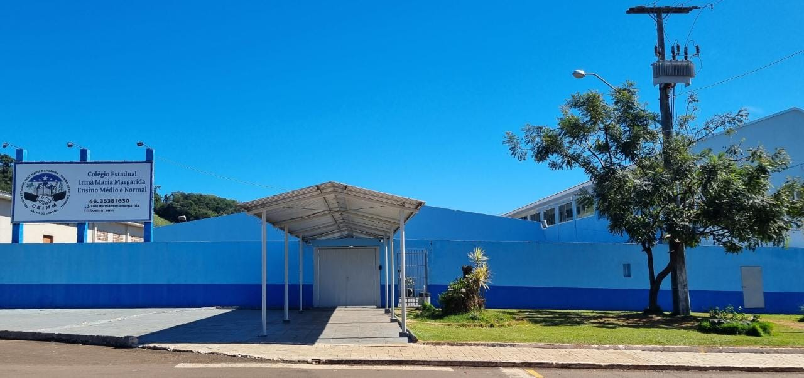

<!DOCTYPE html>

<html lang="pt-br"></html>
    <head>
        <meta charset="UTF-8">
        <title> Ceimm</title>
        <link rel="stylesheet" href="style.css">

    </head>


    <body>

        <header class="cabecalho">

Conheça o nosso Colégio
        </header>

        

        <h1 id = "titulo"> Colégio Estadual Irmã Maria Margarida</h1>

        <h2>O que somos.</h2>

        <p> O Colégio Estadual Irmã Maria Margarida, Médio e Normal, foi criado pelo decreto nº 4951 de 12 de maio de 1978 e
        reconhecido pela Resolução nº 30/82, de 08 de janeiro de 1982. Atualmente conta com uma equipe de 62 profissionais 
        (direção, equipe pedagógica, professores, agentes de apoio) que
        atendem cerca de 500 estudantes, divididos em três períodos: matutino, vespertino e noturno. </p>
        
        <p>O Colégio oferta ensino médio regular e profissionalizante com o curso de formação de docentes, tendo como filosofia:
        <strong class="texto"> “Trabalhar com competência, ensinar com consistência e coerência, aprender com empenho e responsabilidade para
         construir uma identidade social”</strong></p>

         
         <ul>
            <li>Horários de funcionamento</li>

         </ul>

         <section class="Contatos">
            <ol>
                <li>Cursos Ofertados </li>
                <li>Turnos</li>
    
             </ol>

         </section>

         

         


    </body>

    </html>
